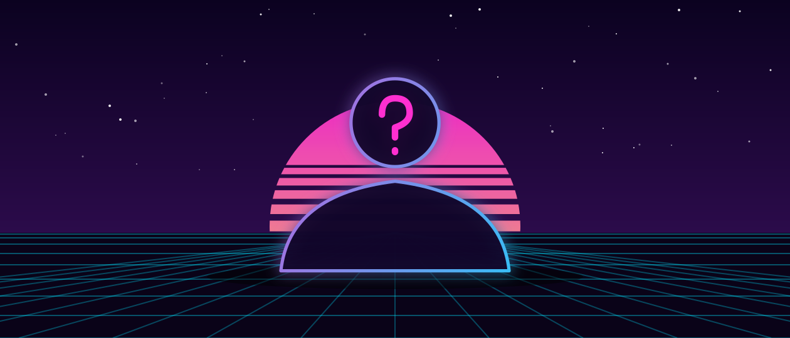
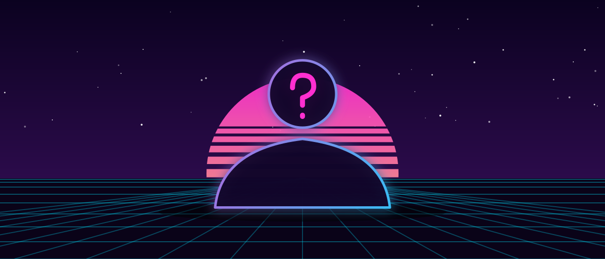

Équipement / Personnages
Personnages
Les deux protagonistes et 8 personnages secondaires ont été révélés à ce jour, dont Raymond et Ernesto « Nesto », aperçus dans l'Extended Look du 27 août 2026. Aucun antagoniste principal n'a encore été officiellement confirmé par Rockstar Games.
 © Rockstar Games
© Rockstar GamesJason Duval
Protagoniste
 © Rockstar Games
© Rockstar GamesLucia Caminos
Protagoniste
 © Rockstar Games
© Rockstar GamesBoobie Ike
Secondaire · figure locale de Vice City
 © Rockstar Games
© Rockstar GamesDre'Quan Priest
Secondaire · fondateur d'Only Raw Records
 © Rockstar Games
© Rockstar GamesCal Hampton
Secondaire · ami de Jason
 © Rockstar Games
© Rockstar GamesThe Real Dimez
Secondaire · duo de rappeuses
 © Rockstar Games
© Rockstar GamesRaul Bautista
Secondaire · spécialiste des braquages
 © Rockstar Games
© Rockstar GamesBrian Heder
Secondaire · vétéran du trafic

Illustration VCNRaymond
Secondaire · responsable d'une planque de drogue

Illustration VCNErnesto « Nesto »
Secondaire · associé de Raymond
 © Rockstar Games
© Rockstar GamesFaune de Leonida
Faune · plus de 170 espèces
Personnages secondaires repérés dans les bandes-annonces et communications officielles. Sources : GTAbase, PCGamesN, GTA Wiki.